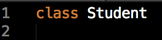
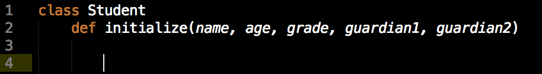
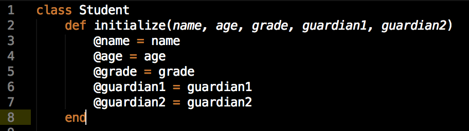
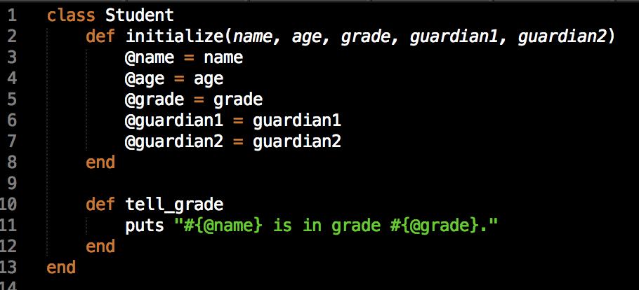
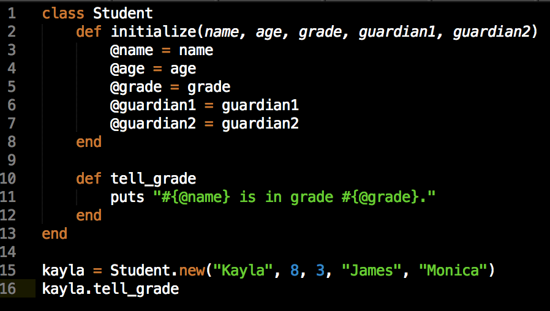

Well, it used to be just fighter/cleric/magic user, but it’s gotten more complex since then - oh in Ruby. Right, right, that would make more sense.
The easiest way to describe a class is to say that it is a prototype, or a framework. A class is a tool used to create objects. The objects that a class creates will have certain characteristics, based on the framework of the class. Classes are useful when you know you have a lot of data to keep track of that’s kinda-almost-sorta identical, but that has a lot of small differences, all of which you will also have to keep track of. It’s sort of a tool for when you know something’s going to be obnoxious. The nice thing is, though, that classes exist to make that obnoxious sort of nitpicky record-keeping easier. You use classes because the other ways to keep track of that much nearly-identical data are far, far more difficult to use.
But how do I use classes? That’s an excellent question, imaginary interlocutor. Let’s make up an example! Maybe you would like to build a program that tracks students at the school you work at. You might decide to do that by creating a class that can produce a unique object for each student that will contain their data. You would start by defining your class. (It would probably be smart to call it something sort of obvious, like, say, Student.)
Then, right after you define it, you put in the initialize method. Initialize is what kicks off the whole show. Most classes need to have an initialize method. Initialize is going to take some number of arguments for the data that your students are going to have in common (that kinda-almost-sorta identical data). You know that students are going to have some data that is relatively similar. Generally speaking, students have names and ages. They have someone or someones who are acting as guardians for them. They are in a certain grade. The list goes on. Were we building this for an actual school system, there would probably be a far larger list of potential arguments for all sorts of other information: medical history, living situation, lunch payments, on and on, unto eternity. School bureaucracy is the best bureaucracy. Anyway, we’ll start by giving our initialize method just a few different arguments:
Once we give it those arguments, we need to let them be accessed throughout the rest of the object that will be created. We do this by converting them from local variables (what they are now, a type of variable that can only be accessed within this particular method) into instance variables (variables that can be accessed by any method in the objects that this class will eventually create. This is done in a super complex and highly technical way. Observe:
I know. It blew my mind the first time too. Once we’ve done that, since we don’t have any other changes we want to make to the data that will be added when the class is called upon to create a new object, we just end the initialize method and ta-da: we have ourselves a class. At the moment, it can’t do much, but that’s ok. We just need to add some methods!
Methods that are built into classes are called instance methods. Instance methods are methods that can be called on the objects the class creates. Let’s build a quick one to demonstrate what this means. We’re going to build a method that, when called, tells us what grade any given student is in. We start by defining a method in much the same way we defined initialize. However, to keep this simple, we’re not going to require any parameters.
Our new method, tell_grade, is very simple. All it’s going to do is tell us what grade our student is in. To do this, it’s going to have to access a few of the instance variables we created above.
Pretty straightforward. Let’s give it a quick test run. We’ll create a new student using the Student class. We will give that new student a name, age, grade, and two guardians’ names,
and then we’ll see if we can query the object to find out what grade our student is in. We hop over to Terminal, run our program, and we get this outcome:

Exactly what we were looking for.
Now, obviously, this has been a very simplistic overview of classes. But the important thing to take away is that classes impart all sorts of functionality and give us an incredibly useful tool for modeling real-world items in our code.